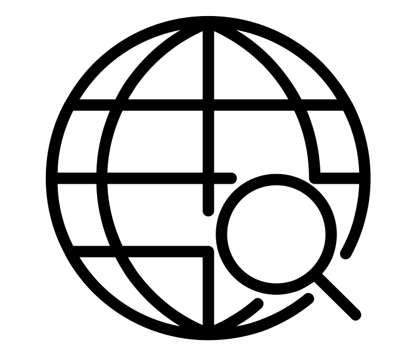
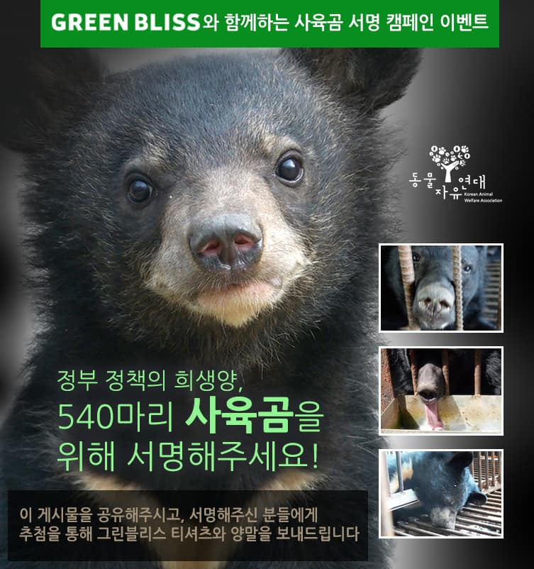
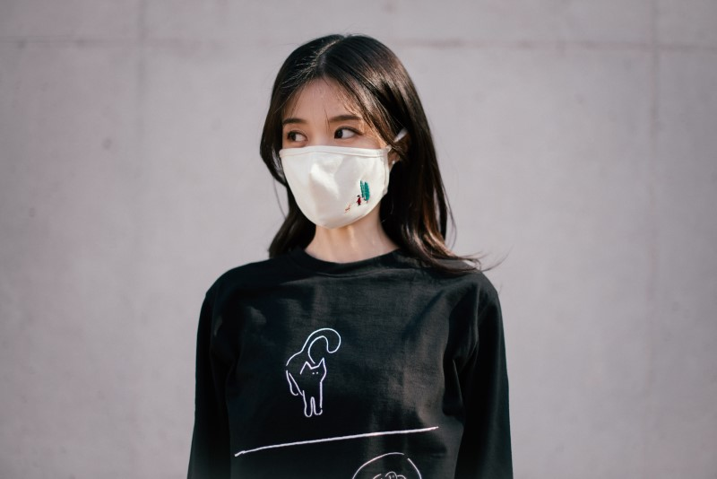

그린블리스 GreenBliss




예쁘고 편안한 양말, 마스크, 티셔츠 등 라이프스타일 제품을 식물성 오가닉 소재로 환경에 해를 최소화하여 만들고, 자연과 동물의 소중함을 이야기하고 행동하려 노력하는 자연주의 브랜드입니다.
그린블리스는 자연이 주는 무한한 행복감을 담은, 예쁘고 편안한 양말, 마스크, 타월, 손수건, 티셔츠를 만듭니다.
관련정보
[후원 후기] 그린블리스(GREEN BLISS), 해양포유류보호법과 어구관리법 제정을 위한 활동에 후원해주셨습니다!